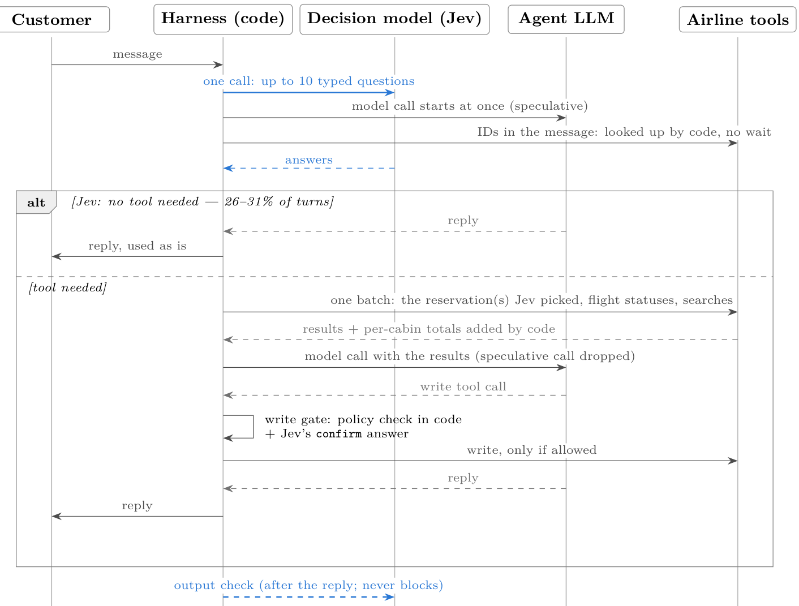
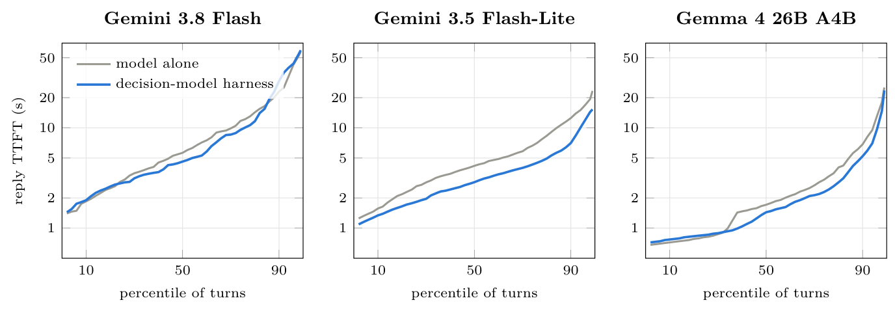
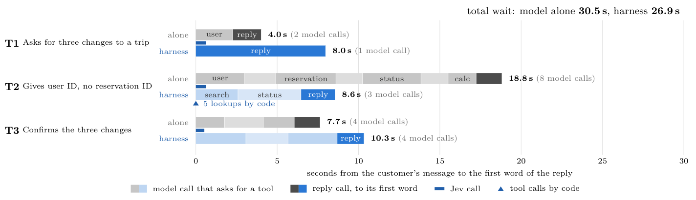

Preprint · November 2026
System-1 Orchestration for Enterprise Conversational AgentsTyped Decisions Beside the LLM on τ²-Bench Airline
Preprint published on Zenodo on 24 November 2026: doi:10.5281/zenodo.24501211.
Abstract
Tool-calling chat agents spend most of a customer’s wait on serial LLM calls, and many of those calls make decisions that a small typed-decision model or plain code can make exactly. We present a decision-model harness, which places a decision model, one that answers yes/no and multiple-choice questions, beside the agent’s LLM rather than in front of it. For our experiments we use Jev, a hosted decision model that answers in about half a second. One Jev call per turn decides whether the turn needs a tool, which of the customer’s reservations it is about, whether flight statuses matter, whether the customer confirmed a write, and the route and date of a flight search, while a speculative model call runs; code then issues those tool calls in one batch and checks every write against the airline policy. On τ2-Bench Airline (50 tasks × 4 trials, Gemini 2.5 Flash as the simulated customer) we compare three agent models alone and inside the harness. Code issued 77–84% of all tool calls and model calls per turn fell by 24–37%. pass4, the share of tasks solved on all four tries, rose on all three models, by 10.7 points on average, and nearly doubled on the weakest model, Gemma 4 26B A4B (0.220 to 0.420). Conversations with a policy-forbidden write fell from 43 to 10. pass1 rose on Gemma (0.465 to 0.560) and Gemini 3.8 Flash (0.810 to 0.860) and fell slightly on Gemini 3.5 Flash-Lite. Cost fell 17% and 25% on the two Gemini models. Reply latency fell at every percentile on Flash-Lite (median −31%, p90 −44%); on Gemini 3.8 Flash, tool-using turns were 43% faster but the slowest turns were not. On four further open models of 30–35B parameters (50 tasks × 1 trial), the harness raised pass1 by 6–12 points on the three that started below 0.70 and made tool-using turns 22–41% faster on all four.
Key results
| Result (τ²-Bench Airline, 50 tasks × 4 trials) | Model alone → inside the harness |
|---|---|
| Tool calls issued by code | 0% → 76.7–84.4% (all three models) |
| Model calls per customer turn | 3.01 → 1.91 (Gemini 3.8 Flash); 2.50 → 1.90 (Flash-Lite); 2.17 → 1.58 (Gemma) |
| pass4 | 0.740 → 0.800 (Gemini 3.8 Flash); 0.540 → 0.600 (Flash-Lite); 0.220 → 0.420 (Gemma 4 26B A4B) |
| pass1 | 0.810 → 0.860 (Gemini 3.8 Flash); 0.760 → 0.735 (Flash-Lite); 0.465 → 0.560 (Gemma) |
| Conversations with a policy-forbidden write | 43 → 10 (5 → 0, 9 → 3, 29 → 7) |
| Agent cost per conversation | $0.0388 → $0.0323 (−17%); $0.0151 → $0.0113 (−25%); $0.0062 → $0.0065 |
| Reply time to first token, Flash-Lite | median 4.18 → 2.87 s (−31%); p90 12.51 → 7.05 s (−44%) |
| Four further open 30–35B models (50 × 1) | pass1 +6 to +12 points on the three below 0.70; tool-using turns 22–41% faster on all four |
All numbers from Tables 3–5 and the abstract of the paper. Gemini 3.8 Flash latency comes from a separate side-by-side 50 × 1 run.
1. Introduction
Enterprise conversational agents act through tools: they look up records, search inventory and change bookings. A typical turn runs the LLM once to ask for a tool, waits for the result, and runs it again to reply, so the customer waits for two or more serial model calls. Many of those calls decide things that need no general reasoning: the argument to a lookup is often an ID the customer just typed, the reservation a customer means is one of the few on their profile, the route of a flight search is a choice among twenty airports, and whether a cancellation is allowed follows from fields on the reservation.
We borrow the dual-process framing of fast and slow thinking [12]. System 1 is code plus Jev [11], which answers typed questions with probabilities in a fraction of a second. System 2 is the general LLM, kept for open-ended language and judgement. The aim is to take every decision System 1 can make exactly off System 2’s critical path, without lowering task success or raising cost. Our contributions are: (1) a decision-model harness that runs one decision-model call per turn (Jev, in our experiments) in parallel with a speculative model call; (2) a rule for which tool arguments leave the model, with code issuing the resulting calls in one batch; (3) a “tool needed?” fast path that sends simple turns straight to the model; (4) a write gate that combines a code policy check with Jev’s confirmation answer, plus input and output guardrails on the same calls; and (5) a paired evaluation on three agent models of different strength and speed and four smaller open models, with an analysis of the simulated customer’s share of failures, and an account of where the harness does not help.
2. Related work
Tool-using agents and their benchmarks. ReAct [27] interleaves reasoning traces with tool calls, Toolformer [24] teaches a model when and how to call an API, and Gorilla [21] and ToolLLM [22] fine-tune models to pick among thousands of real APIs and fill their arguments. Benchmarks moved from single calls to stateful, multi-turn work: API-Bank [15] scores planning, retrieval and calling; ToolSandbox [17] adds state dependencies between tools and an on-policy simulated user; AppWorld [25] asks agents to drive nine apps through code. τ-bench [28] brought the setting closest to customer service: a simulated customer, a domain policy the agent must enforce, a database whose final state is checked, and the passk metric for consistency over repeated trials. τ2-Bench [2] extends it to environments the user can also act on, and OpenRouter runs a public leaderboard on its airline domain [20]. All of this work makes the LLM a better tool user. We take the opposite route: we leave the LLM as it is and move the mechanical part of tool use, copying IDs, choosing among enumerable options and checking policy, out of it.
Making LLM systems cheaper and faster. One line of work picks the cheapest model that will do. FrugalGPT [4] and AutoMix [1] cascade from small to large models and escalate when a check fails; Hybrid LLM [7] and RouteLLM [19] train a router that sends each query to a strong or a weak model before it runs. TinyAgent [8] shows that a small, fine-tuned model can handle function calling on its own for a narrow domain, and Belcak et al. [3] argue that most agent calls are repetitive and specialised enough for small models. A second line attacks latency in the serving stack and the call graph: speculative decoding [14] drafts tokens with a small model and verifies them with a large one; Skeleton-of-Thought [18] generates the parts of an answer in parallel; LLMCompiler [13] plans function calls as a graph and runs independent ones at once; SGLang [29] and Prompt Cache [9] reuse computation across calls that share a prefix; and hedged requests [6] trim tail latency in any distributed service. Our harness borrows from both lines but removes calls instead of choosing who makes them: decisions with an exact answer never reach the LLM, and the decision call we add runs in parallel with a speculative model call, so it is speculation at the level of whole calls rather than tokens.
Fast and slow components, guardrails and structured decisions. Dual-process designs [12] have been tried in agents before. SwiftSage [16] pairs a small fast model for routine actions with a large model for planning, and the Talker–Reasoner architecture [5] lets a fast conversational model answer while a slower reasoner updates beliefs and plans in the background. In both, the fast part is still a generative LLM. On the safety side, Llama Guard [10] classifies inputs and outputs with a dedicated LLM, and NeMo Guardrails [23] scripts the rails a conversation may follow; each adds a call, or a step, in front of the model. Constrained decoding [26] guarantees that a generator’s output fits a schema but does not make the choice faster or cheaper. Our System 1 differs in kind: a typed decision model returns probabilities over a fixed set of answers, so every guardrail, confirmation and argument choice is one cheap, parallel call whose answer code can act on with a threshold.
3. The decision-model harness

Decision models. The harness needs one component besides code: a decision model, which reads a short text state and answers typed questions (yes/no, or a choice among named options) with probabilities. Many models can play this role: safety classifiers such as Llama Guard [10], the learned routers that pick an LLM per query [19, 7], fine-tuned small classifiers, or a small LLM constrained to a fixed set of answers. The harness asks only for the answers and their probabilities, so any of them can be used. For this experiment we chose Jev, because it answers many typed questions in one request, returns a probability for every option, and is served through a public API.
Jev. Jev [11] is a hosted typed-decision model from TypeSafe, served through OpenRouter’s decisions API. A request carries a short text state and any number of questions, each either yes/no (answered with a probability) or a choice among named options (answered with a probability per option). Its architecture and training data are not public; we treat it as a black box, called under the tag typesafe/jev-latest between 30 September and 6 October 2026. In our runs it answered the per-turn call in a median 0.53–0.56 s and cost $0.0006–0.0009 per conversation.
One turn (Figure 1). IDs first: user IDs and six-character reservation codes in the message are validated with read-only calls and issued as real tool calls, with no model call and no wait for Jev; a user with at most four reservations has all of them fetched when none is named, and flight statuses are fetched too when the message mentions a delay, cancellation or status. Jev and a speculative model call: one Jev request carries the questions of Table 1, and a model call starts at the same time (after the ID lookups’ results, on turns that had any). Fast path: when Jev’s tool_needed answer is below 0.5, the model’s answer goes out as is (26–31% of turns); if the model nonetheless asked for a tool, the call proceeds normally, except that below 0.2 the model is asked again without tool schemas. Jev-chosen lookups: otherwise, code issues in one batch the reservation Jev picked (or all of them, up to ten, when the customer means several or has not said which), the statuses of their flights when Jev says the reply depends on them, and the direct and one-stop searches when Jev names origin, destination and date; the speculative call is then left to finish unused and the model is called again with the results. Every search result, whoever issued it, gets per-cabin itinerary totals appended, so the calculate tool is removed from the model’s tool list. Write gate: a write runs only if it passes a code policy check and Jev’s confirm answer is at least 0.5 (Section 3.3). Guardrails: abuse ≥ 0.9 with no IDs in the message returns a fixed de-escalation reply; injection ≥ 0.8 adds a guard note and re-runs the model, on the fast path too; after a reply is sent, a second Jev call checks it, except on the fast path and for policy-mandated fixed lines.
3.1 The decision question set
| Question | Type | Options | Use and action |
|---|---|---|---|
| Input call, once per customer turn, in parallel with the model | |||
tool_needed |
yes/no | – | Fast path below 0.5: the model’s answer goes out (re-asked without tools below 0.2 if it asked for one) |
reservation |
choice | the customer’s reservations (route, dates, cabin, passengers), all, none | Code fetches the chosen one, or all, in one batch (≥ 0.5); asked once the profile is known |
flight_status |
yes/no | – | ≥ 0.5 → code fetches the statuses of the flights in play |
next |
choice | lookup, search, execute, reply, transfer | search ≥ 0.4 enables the code-run search |
origin, destination |
choice | 20 airports (“PHL (Philadelphia)”), none | Search arguments, used at ≥ 0.4 |
date |
choice | 16 dates (“May 19, 2024 (Sunday, 4 days from today)”), none | Search argument, used at ≥ 0.4 |
confirm |
yes/no | – | Write gate: < 0.5 → write not executed; model told to obtain a yes if allowed |
abuse / injection |
yes/no | – | Fixed de-escalation reply (≥ 0.9, no IDs in the message) / guard note and re-run (≥ 0.8) |
| Only when an insured cancellation’s eligibility depends on it (blocking) | |||
reason |
choice | change of plan, airline cancelled, health, weather, other | Policy check: insurance covers health or weather only |
| Output call, after the reply is sent (logged, never blocking) | |||
leak / toxic / caved |
yes/no | – | Another person’s data or a card number / rudeness / obeying an override |
Choice options carry human-readable descriptions rather than bare codes, so Jev can match “my trip to Denver on the 27th” to a reservation, a city name to its airport and “the day after my flight” to a date; every choice has a none option, so Jev can decline. A Jev answer is acted on only above its threshold; below it the model’s own behaviour stands. The thresholds are fixed and simple: 0.5 for yes/no answers and reservation choices, 0.4 for the search arguments, and 0.8–0.9 for the guardrails.
3.2 Where each tool argument comes from
| Tool | Argument | Source | How |
|---|---|---|---|
get_user_details |
user_id |
code | Regex on the message, validated by a read-only lookup |
get_reservation_details |
reservation_id |
code, Jev | A code in the message (code), or Jev’s choice among the customer’s own reservations |
get_flight_status |
number, date | code, Jev | From the fetched reservations: when the message names a reservation and mentions a delay or status (code), or when Jev says the reply depends on statuses |
search_direct_flight |
origin, dest., date | Jev | Choices over 20 airports and 16 dates (Table 1) |
search_onestop_flight |
origin, dest., date | Jev | Same answers; both searches run in one batch |
calculate |
expression | removed | Code appends per-cabin itinerary totals to every search result |
| Writes (book, cancel, change, certificate) | all | model | The model fills every argument; Jev only decides whether a write runs (confirm, reason) |
transfer_to_human_agents |
summary | model | Free text |
Table 2 shows how arguments are filled. Code-issued calls enter the conversation history exactly like the model’s own tool calls, so the model reads their results on its next call and the benchmark scores them the same way.
3.3 The write gate
τ2’s tools do not enforce the airline policy; the agent must. The gate checks every write in code before it runs. A cancellation is blocked if any flight has already flown, and otherwise allowed only if the booking is under 24 hours old, the cabin is business, the airline cancelled a flight, or the reservation is insured and the customer’s reason (Jev’s reason choice, a separate blocking call) is health or weather. A compensation certificate must match $100 × passengers for a cancelled flight or $50 × passengers for a delayed one, for a silver or gold member or an insured or business reservation. Basic-economy flights cannot be changed. An allowed write still runs only if Jev’s confirm answer, available from the start of the turn, is at least 0.5. A blocked write is never executed: the model gets a neutral explanation and is called again, up to three times, after which the write is dropped from the reply. A write that passes adds no time; a blocked one costs another model call. Replaying every task’s gold actions offline, the gate blocked none of the 31 gold writes it has rules for (cancellations, certificates and flight changes), with the cancellation reason stubbed either way.
4. Experimental setup
We use τ2-Bench v1.0.1 (commit 5bfa7e3), airline domain, all 50 tasks with seed 300 and Gemini 2.5 Flash as the simulated customer, the customer model of OpenRouter’s leaderboard [20], with τ2’s original system prompt. Three agent models span strength and speed, all on Vertex AI’s global endpoint with default decoding settings: Gemini 3.8 Flash (gemini-3.8-flash, thinking level low), Gemini 3.5 Flash-Lite (gemini-3.5-flash-lite, thinking level low) and Gemma 4 26B A4B (google/gemma-4-26b-a4b-it-maas, a mixture-of-experts open model with about 4B active parameters, through the managed OpenAI-compatible endpoint, no thinking setting). Each model runs alone (all 14 tools, one model call per step) and inside the harness, which differs by the components of Section 3, including the removed calculate tool. We tried two iterations of the harness; the aim of this work is not to tune a harness to a benchmark but to show what a decision model adds to a tool-calling agent. Runs were made between 1 and 5 October 2026.
Accuracy and cost come from 4 trials of every task (200 scored conversations per agent). Conversations that ended in an endpoint error were re-run, as τ2 does by default: 0 and 3 re-run attempts for Gemini 3.8 Flash alone and with the harness, 1 and 3 for Flash-Lite, and 55 and 63 for Gemma, whose endpoint failed often; cost includes the spend of these attempts. Latency for Flash-Lite and Gemma comes from their 4-trial runs; Flash-Lite’s two runs ran side by side. For Gemini 3.8 Flash, latency comes from a separate side-by-side run of 50 tasks × 1 trial, made for latency only. Turns that contain a retried call are excluded from all latency figures.
Smaller open models. To see how the harness carries to small open-weight models, we ran four more models of 30–35B parameters through OpenRouter, each alone and inside the harness, 50 tasks × 1 trial, with the two arms side by side and every call sent to one pinned provider with no fallback: Qwen3.6-35B-A3B (qwen/qwen3.6-35b-a3b, DeepInfra, FP8, reasoning effort low), Nemotron 3.5 Lightning (nvidia/nemotron-3.5-lightning, 30B with 3B active, DeepInfra, BF16, reasoning effort low), Gemma 4 31B (google/gemma-4-31b-it, dense, Friendli) and Solar Mini 4 (upstage/solar-mini4, 35B with 3B active, Upstage). These runs were made on 6 October 2026 with the same customer simulator, prompt and harness; a conversation in which the model kept emitting malformed tool-call JSON counts as a failure (Gemma 4 31B: 5 conversations alone, 3 with the harness).
Metrics. τ2’s passk (k = 1…4: the chance that all k trials of a task succeed, averaged over tasks) and its database-match and communication checks; tool-selection rate, the share of gold tool calls whose tool the agent called at least once, and the write-tool selection rate, the same share over gold write calls only; argument accuracy, the share of the selected gold calls made with exactly the right arguments under τ2’s matcher; write precision, the share of the agent’s write calls that match a gold write; policy-forbidden writes, the number of conversations that made any write on a task whose correct outcome has no writes; the share of tool calls issued by code; model calls per customer turn; reply time to first token (TTFT), from the customer’s message reaching the agent to the first token of the agent’s final reply, excluding turns with a retried call; a tool-using turn is one with a code-issued call, a model tool call, or more than one model call; and agent cost at list price, with Vertex’s automatic prompt cache billed at its cached rate, plus Jev as billed.
5. Results
| Gemini 3.8 Flash | Gemini 3.5 Flash-Lite | Gemma 4 26B A4B | ||||
|---|---|---|---|---|---|---|
| 50 tasks × 4 trials | alone | harness | alone | harness | alone | harness |
| pass1 | 0.810 | 0.860 | 0.760 | 0.735 | 0.465 | 0.560 |
| pass2 | 0.773 | 0.823 | 0.663 | 0.660 | 0.333 | 0.477 |
| pass3 | 0.755 | 0.810 | 0.595 | 0.625 | 0.265 | 0.440 |
| pass4 | 0.740 | 0.800 | 0.540 | 0.600 | 0.220 | 0.420 |
| Database matches expected state | 82.0% | 87.0% | 78.0% | 74.5% | 50.3% | 60.3% |
| Required information communicated | 83.3% | 87.5% | 70.8% | 79.2% | 25.0% | 20.8% |
| Tool-selection rate | 93.3% | 91.7% | 92.8% | 83.1% | 80.5% | 78.3% |
| Write-tool selection rate | 84.7% | 84.7% | 86.2% | 69.9% | 67.9% | 67.9% |
| Argument accuracy (given selected) | 92.8% | 95.2% | 91.3% | 89.6% | 75.7% | 79.6% |
| Write precision | 88.4% | 95.6% | 77.3% | 78.7% | 15.6% | 25.5% |
| Policy-forbidden writes (conversations) | 5 | 0 | 9 | 3 | 29 | 7 |
| Tool calls issued by code | 0% | 76.7% | 0% | 76.6% | 0% | 84.4% |
| Turns on the fast path | – | 27.6% | – | 30.9% | – | 25.9% |
| Model calls per turn | 3.01 | 1.91 | 2.50 | 1.90 | 2.17 | 1.58 |
| Agent cost per conversation | $0.0388 | $0.0323 | $0.0151 | $0.0113 | $0.0062 | $0.0065 |
Table 3 gives the main results. Work moved to code. On every model, code issued 77–84% of all tool calls and the model made 24–37% fewer calls per customer turn. Consistency and safety. pass4 rose on all three models, by 6, 6 and 20 points (10.7 on average): agents inside the harness solved more tasks on every one of four tries. The largest gain was on the weakest model, Gemma, whose pass4 nearly doubled (0.220 to 0.420). Conversations with a policy-forbidden write fell on all three models, from 43 to 10 in total, with the largest drop on Gemma (29 to 7). Single-try accuracy. pass1 rose 9.5 points on Gemma and 5.0 on Gemini 3.8 Flash and fell 2.5 on Flash-Lite. Other measures moved both ways: write precision and argument accuracy rose on most models, while the tool-selection rate fell on all three (most on Flash-Lite, 92.8% to 83.1%) and Flash-Lite’s write-tool selection fell from 86.2% to 69.9%. Cost. The harness was 17% and 25% cheaper on the two Gemini models, including Jev; on Gemma, whose calls cost little, cost was about the same (+5%).
| Gemini 3.8 Flash | Gemini 3.5 Flash-Lite | Gemma 4 26B A4B | ||||
|---|---|---|---|---|---|---|
| Reply TTFT (s) | alone | harness | alone | harness | alone | harness |
| Median | 5.64 | 4.61 | 4.18 | 2.87 | 1.71 | 1.44 |
| Mean | 10.14 | 10.20 | 5.73 | 3.82 | 3.30 | 2.63 |
| p90 | 22.99 | 29.28 | 12.51 | 7.05 | 6.85 | 5.21 |
| Tool-using turns, median | 9.20 | 5.24 | 5.81 | 3.24 | 3.02 | 2.34 |
| Turns with no tool, median | 2.40 | 2.85 | 2.30 | 2.29 | 0.82 | 0.92 |
| Total wait per conversation, mean | 44.8 | 45.0 | 27.7 | 17.9 | – | – |

Latency. Table 4 and Figure 2 compare reply waits. On Flash-Lite the harness was faster at every percentile: median −31%, mean −33%, p90 −44%, and total wait per conversation −35%. Part of this may come from thinking rather than from fewer calls: at the same low setting, Flash-Lite produced thinking tokens on 84% of calls alone but 49% inside the harness. On Gemma the harness was faster from about the 33rd percentile up (median −16%, p90 −24%). On Gemini 3.8 Flash, tool-using turns were 43% faster at the median, and the overall median fell by 1.0 s, but the slowest 15% of turns were slower, and the mean and total wait per conversation did not change. Turns with no tool cost the same or slightly more with the harness on all three models: they need one model call either way.

Figure 3 shows the mechanism in one conversation: where code can do the lookups, a chain of serial model calls collapses into one batch.
| Nemotron 3.5 Lightning | Gemma 4 31B | Solar Mini 4 | Qwen3.6-35B-A3B | |||||
|---|---|---|---|---|---|---|---|---|
| 50 tasks × 1 trial | alone | harness | alone | harness | alone | harness | alone | harness |
| pass1 | 0.66 | 0.78 | 0.54 | 0.60 | 0.56 | 0.62 | 0.80 | 0.80 |
| Tool-selection rate | 83.8% | 92.3% | 75.8% | 84.3% | 70.4% | 85.9% | 97.2% | 96.5% |
| Policy-forbidden writes | 3 | 3 | 3 | 1 | 5 | 1 | 2 | 0 |
| Tool calls issued by code | 0% | 83.1% | 0% | 81.8% | 0% | 74.4% | 0% | 82.4% |
| Model calls per turn | 2.41 | 1.84 | 1.53 | 1.41 | 1.61 | 1.59 | 2.59 | 1.67 |
| Reply TTFT, median (s) | 5.93 | 4.61 | 2.26 | 1.96 | 2.50 | 2.30 | 11.95 | 10.04 |
| Reply TTFT, p90 (s) | 15.23 | 12.50 | 5.68 | 4.69 | 8.13 | 8.91 | 27.75 | 24.74 |
| Tool-using turns, median (s) | 8.52 | 6.27 | 4.25 | 3.07 | 5.52 | 3.23 | 15.93 | 12.38 |
| Turns with no tool, median (s) | 3.32 | 3.20 | 1.36 | 1.29 | 1.73 | 1.77 | 7.43 | 8.25 |
| Agent cost per conversation | $0.0070 | $0.0065 | $0.0120 | $0.0121 | $0.0022 | $0.0038 | $0.0166 | $0.0180 |
Smaller open models. Table 5 extends the comparison to four open models of 30–35B parameters. The accuracy gains on the smaller models were substantial: pass1 rose 12 points on Nemotron 3.5 Lightning (0.66 to 0.78) and 6 points on Gemma 4 31B and Solar Mini 4, in line with the 9.5-point gain on Gemma 4 26B A4B in Table 3. The gains come with better tool choice: the share of required tools the model called rose by 8–16 points on all three. Only Qwen3.6-35B-A3B, which already called the right tool 97% of the time and passed 0.80 of the tasks alone, was unchanged. Latency also improved substantially: tool-using turns were 22–41% faster on all four models, the median reply wait fell by 8–22%, and the p90 fell by 11–18% on three of the four (Solar Mini 4’s rose 10%). Turns that need no tool cost about the same, as on the Gemini models. Code issued 74–83% of all tool calls, as on the main models, and agent cost stayed within a few tenths of a cent per conversation.
6. Analysis
Where the latency gain comes from. A tool-using turn costs the model alone one call per lookup it decides on, then one to reply; inside the harness, the lookups whose arguments are known, or which Jev can pick, are issued before the model runs. The turns where the model alone chains several reads (finding a reservation among many, checking flight statuses) are where the harness saves most, and turns that need no tool gain nothing. We have not ablated the components, so this attribution rests on the call counts and on examples such as Figure 3, not on controlled comparisons.
Why Gemini 3.8 Flash’s slowest turns did not improve. Two effects made each Gemini call slower inside the harness (median time to first token per call 2.58 s against 2.06 s, p90 10.6 s against 5.9 s), at every prompt size. First, Gemini thought more: both agents sent thinking level low on every call (logged for the side-by-side runs), yet 4–11% of harness calls produced thinking tokens, against none of about 3,300 calls for the model alone, and those calls took a median 3.7 s to their first token. We have not found the cause: the extra thinking is not tied to records fetched by code, to the placeholder thought signatures on code-issued calls (it occurs before the first such call), or to turns that involve prices; the one request difference from the first call on is the removed calculate tool. Second, when code takes over a turn, the speculative call already started is left to finish: these abandoned calls were 11% of all harness calls and add load to the shared endpoint.
| Gemini 3.8 Flash | Gemini 3.5 Flash-Lite | Gemma 4 26B A4B | ||||
|---|---|---|---|---|---|---|
| alone | harness | alone | harness | alone | harness | |
| Customer said yes and ended the chat | 7 | 7 | 7 | 12 | 8 | 11 |
| pass1, without those | 0.835 | 0.891 | 0.778 | 0.767 | 0.470 | 0.580 |
| pass4, without those | 0.804 | 0.870 | 0.600 | 0.714 | 0.250 | 0.525 |
| Failures reviewed by τ2’s reviewer | 38 | 28 | – | – | – | – |
| with a critical agent error | 18 | 19 | – | – | – | – |
Part of every failure count is the simulated customer. In 7–12 failures per agent, the agent listed a change and asked for confirmation, and the simulated customer replied “yes, please proceed” and ended the chat in the same message, leaving the agent no turn in which to act (Table 6). These endings were more frequent inside the harness on Flash-Lite (12 against 7) and Gemma (11 against 8); the write gate asks the model to obtain an explicit yes, which may invite them, so they are not purely simulator noise. On Gemini 3.8 Flash, τ2’s own reviewer finds a critical agent error in 19 of the harness’s 28 failures and 18 of the model alone’s 38.
Jev’s cost in time, and the guardrails. The per-turn Jev call returned in a median 0.53–0.56 s, below the Gemini models’ median time to first token and close to Gemma’s (0.86–1.04 s), so on Gemma it can delay a turn. τ2’s simulated customers are polite: the abuse and injection checks never fired, and the output check, which only logs, flagged 4 replies at its 0.8 threshold (scores 0.83–0.84) and none at 0.9. The write gate blocked 2, 49 and 73 writes on the three models, mostly on policy rules, each costing another model call.
7. Further optimizations
(1) Cancel the speculative call as soon as code takes over a turn, removing the 11% of abandoned calls and their load. (2) Find what makes Gemini think: restoring the calculate tool in the harness, and removing it from the model alone, would test the leading candidate; the lowest thinking level on turns Jev classes as routine is a direct way to cap the slow tail meanwhile. (3) A tool-free fast path: the harness already re-asks the model without tools when Jev is very sure no tool is needed (below 0.2); sending every fast-path call without tool schemas would extend this. (4) Reasoning chosen per turn. The same Jev call could decide how hard the model should think; in small pilot runs on three models, raising reasoning everywhere did not improve accuracy, and with the harness in place a model at low or no reasoning was about as accurate as at high. (5) Prompt caching for larger system prompts: τ2’s airline prompt is about 3.5k tokens, below the 4,096-token minimum for explicit caching on our endpoint; enterprise prompts are often far longer, and caching the static prefix [9] would cut cost and prefill time on every call. (6) A decision model fine-tuned for this job. We used Jev off the shelf; a decision model trained on this domain’s questions would clear the thresholds more often, so code would issue more calls and more turns would take the fast path.
8. Limitations and conclusion
Limitations. We study one benchmark domain (airline), three agent models and one cloud provider, with 50 tasks. We did not ablate the harness’s components, so we cannot attribute the accuracy, write and latency changes to any one of them; the harness also removes the calculate tool, which changes the model’s tool list. Some of the harness’s reads go directly to the environment rather than through recorded tool calls: building Jev’s reservation options reads the customer’s profile and reservations, and the ID checks and the write gate read records as well. These reads are not counted in the tool-call figures, and because τ2’s tools run in memory they add no time to the reported latency.
Conclusion. A typed decision model working beside a tool-calling LLM moved three-quarters or more of all tool calls to code and cut model calls per turn by 24–37% on every model we tried. It made agents more consistent (pass4 +10.7 points on average, and 0.22 to 0.42 on the weakest model), cut policy-forbidden writes from 43 to 10, cut cost by 17–25% on the two Gemini models, and cut reply latency throughout on Flash-Lite; on Gemini 3.8 Flash it sped up tool-using turns but not its slowest ones. On smaller open models the accuracy gains were larger: pass1 rose 6–12 points on the three weaker models, and tool-using turns were 22–41% faster on all four. The principle is that System 1 never sits in front of System 2: Jev runs in parallel with a speculative model call, and only decisions with exact answers are taken from the model.
Code and data. The harness, evaluation scripts, all sixteen runs used here (transcripts and per-call event logs) and the figure scripts are at https://github.com/vamshibobby/jev-tau2-harness (MIT licence).
Use of AI tools. AI coding assistants were used to help write the experiment and analysis code and to edit and proofread the manuscript. The agents under test are themselves language models, as described in Section 3. The author designed the study, checked every reported number against the saved run logs, and takes full responsibility for the content.
Conflicts of Interest. The author declares no conflicts of interest and has no affiliation with TypeSafe, OpenRouter or Google.
Ethics. All conversations are between an agent and a simulated customer on synthetic airline data; no human participants or personal data were involved.
References
- P. Aggarwal et al. AutoMix: Automatically mixing language models. In NeurIPS, 2024.
- V. Barres et al. τ2-Bench: Evaluating conversational agents in a dual-control environment. 2025.
- P. Belcak et al. Small language models are the future of agentic AI. 2025.
- L. Chen, M. Zaharia, J. Zou. FrugalGPT: How to use large language models while reducing cost and improving performance. Transactions on Machine Learning Research, 2024.
- K. Christakopoulou et al. Agents thinking fast and slow: A talker-reasoner architecture. 2024.
- J. Dean, L. A. Barroso. The tail at scale. Communications of the ACM 56(2):74–80, 2013.
- D. Ding et al. Hybrid LLM: Cost-efficient and quality-aware query routing. In ICLR, 2024.
- L. E. Erdogan et al. TinyAgent: Function calling at the edge. In EMNLP: System Demonstrations, 2024.
- I. Gim et al. Prompt Cache: Modular attention reuse for low-latency inference. In MLSys, 2024.
- H. Inan et al. Llama Guard: LLM-based input-output safeguard for human-AI conversations. 2023.
- TypeSafe. Jev, a typed decision model (
typesafe/jev-latest), served through OpenRouter’s decisions API, https://openrouter.ai/api/alpha/decisions, accessed October 2026. - D. Kahneman. Thinking, Fast and Slow. Farrar, Straus and Giroux, 2011.
- S. Kim et al. An LLM compiler for parallel function calling. In ICML, 2024.
- Y. Leviathan, M. Kalman, Y. Matias. Fast inference from transformers via speculative decoding. In ICML, 2023.
- M. Li et al. API-Bank: A comprehensive benchmark for tool-augmented LLMs. In EMNLP, 2023.
- B. Y. Lin et al. SwiftSage: A generative agent with fast and slow thinking for complex interactive tasks. In NeurIPS, 2023.
- J. Lu et al. ToolSandbox: A stateful, conversational, interactive evaluation benchmark for LLM tool use capabilities. In Findings of NAACL, 2025.
- X. Ning et al. Skeleton-of-Thought: Prompting LLMs for efficient parallel generation. In ICLR, 2024.
- I. Ong et al. RouteLLM: Learning to route LLMs with preference data. In ICLR, 2025.
- OpenRouter. τ2-Bench Airline leaderboard. https://openrouter.ai/benchmarks/tau2-bench-airline, accessed 2026-10-05.
- S. G. Patil et al. Gorilla: Large language model connected with massive APIs. In NeurIPS, 2024.
- Y. Qin et al. ToolLLM: Facilitating large language models to master 16000+ real-world APIs. In ICLR, 2024.
- T. Rebedea et al. NeMo Guardrails: A toolkit for controllable and safe LLM applications with programmable rails. In EMNLP: System Demonstrations, 2023.
- T. Schick et al. Toolformer: Language models can teach themselves to use tools. In NeurIPS, 2023.
- H. Trivedi et al. AppWorld: A controllable world of apps and people for benchmarking interactive coding agents. In ACL, 2024.
- B. T. Willard, R. Louf. Efficient guided generation for large language models. 2023.
- S. Yao et al. ReAct: Synergizing reasoning and acting in language models. In ICLR, 2023.
- S. Yao et al. τ-bench: A benchmark for tool-agent-user interaction in real-world domains. 2024.
- L. Zheng et al. SGLang: Efficient execution of structured language model programs. In NeurIPS, 2024.
Cite this paper
Atukuri, S. V. (2026). System-1 Orchestration for Enterprise Conversational Agents: Typed Decisions Beside the LLM on τ²-Bench Airline. Zenodo. https://doi.org/10.5281/zenodo.24501211
@misc{atukuri2026system1,
author = {Atukuri, Sai Vamshi},
title = {{System-1 Orchestration for Enterprise Conversational Agents: Typed Decisions Beside the LLM on $\tau^2$-Bench Airline}},
year = {2026},
month = nov,
publisher = {Zenodo},
doi = {10.5281/zenodo.24501211},
url = {https://doi.org/10.5281/zenodo.24501211}
}Full text: https://vamshibobby.github.io/papers/system1-orchestration-tau2-airline/ · PDF: https://vamshibobby.github.io/papers/system1-orchestration-tau2-airline/system1-orchestration-tau2-airline.pdf · Code: https://github.com/vamshibobby/jev-tau2-harness · Licence: CC BY 4.0